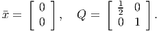
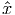
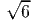

Consider the problem
- (a)
- Show this problem has exactly two KKT points.
- (b)
- What do the second order conditions tell you about the two KKT points?
- (c)
- A Lagrangian dual function can be constructed as
Find θ(v) for v ∈ ℝ.
- (d)
- Solve the Lagrangian dual. Is there a duality gap for this nonconvex problem?
Solution:
- (a)
- The KKT conditions are The only feasible point where the inequality constraint is active is x1 = (0, 0). This
satisfies the KKT conditions with u1 = 0, v = 3.
At any other KKT point, we must have x1 > 0, so u1 = 0 from (6). From (1), we get v = 1, then from (2) we get x2 = 2, and then from (3) we get x1 = 2. This gives the second KKT point, x2 = (2, 2).
- (b)
- The Hessian of the Lagrangian is
At x2 = (2, 2), we have v = 1, so ∇ xx2L(x,u,v) is positive semidefinite so immediately we get that x2 satisfies the second order necessary conditions. To check the sufficient conditions, we need to examine directions satisfying dT ∇h() = 0, since v≠0. Thus we need
in which case
so it is a local minimizer.
At x1 = (0, 0), we have v ≥ 3, so ∇ xx2L(x,u,v) is indefinite. We need to consider the directions d orthogonal to the gradients of the active constraints with nonzero multiplier, and making nonpositive inner product with the gradients of the active constraints. So we need d to satisfy:
So d = (t, 0) for any t ≥ 0. For any such nonzero d, we have dT ∇ xx2L(x,u,v)d < 0, so the second order necessary conditions are violated. Note also that the gradients of the active constraints are linearly independent at x1, so CQ holds, so we can conclude x1 is not a local minimizer.
- (c)
- We have

- (d)
- Dual problem is
Note that > 0 for v ≤ 1, so the optimal solution is to take v = 1, giving optimal dual value 2. The known primal local minimizer is x2, which has value 2. So the optimal primal and dual values agree, so there is no duality gap.
One choice for a trust region method to solve the unconstrained problem
|
| (7) |
is to update the current iterate at each iteration by solving the subproblem
|
| (8) |
where Q is a symmetric positive definite matrix and r is a positive parameter. Assume f : ℝn → ℝ is smooth and ∇f()≠0.
- (a)
- (20 points) Prove the point
(9) is the unique global minimizer to (8).
- (b)
- (10 points) Assume (7) has a global minimizer x* and that the Hessian of f(x) is positive definite in a neighborhood of x*. The parameter r and the matrix Q can be updated every time the iterate is updated. How could you choose to update Q and r to try to obtain quadratic convergence to x*?
- (c)
- (10 points) Let x ∈ ℝ2 and let
(10) Initialize with
 The predicted change in f(x) is the optimal value of (8). The actual change is f(
 ) - f(). The trust region radius r is updated based in part upon a comparison of
the predicted and actual changes.
) - f(). The trust region radius r is updated based in part upon a comparison of
the predicted and actual changes.
- i.
- Assume r = . Show
 = (-1, 1). Would you suggest increasing or
decreasing r, or leaving it unchanged?
= (-1, 1). Would you suggest increasing or
decreasing r, or leaving it unchanged?
- ii.
- Assume r = . Show
 = (-2, 2). Would you suggest increasing or
decreasing r, or leaving it unchanged?
= (-2, 2). Would you suggest increasing or
decreasing r, or leaving it unchanged?
Solution:
- (a)
- The feasible region of (8) is bounded and the objective function is continuous, so a
global minimizer exists by Weierstrass. The constraint is convex and strictly satisfied by
x = , so the Slater CQ holds, so any local minimizer is a KKT point. The KKT
conditions are Since ∇f()≠0, it follows from (11) that u > 0 and
(15) It then follows from (12) that

(16) as in (9). Since this is the only KKT point and since any global minimizer must be a KKT point, and a global minimizer exists, it follows that  is the unique global minimizer.
- (b)
- We want to be taking the Newton step, so we want to pick Q = ∇xx2f(x) and r = .
- (c)
- We have
giving
- i.
- When r = , we obtain
Since we’ve underestimated the actual improvement, the trust region radius r can either remain unaltered or increased.
- ii.
- When r = , we obtain
The function f(x) got worse, so we should decrease r.
- (a)
- Let C ⊆ ℝ be a nonempty convex set. Let f : C → ℝ be a smooth convex nondecreasing function and let g : ℝ → C be a smooth convex function. Prove f(g(x)) is a convex function for x ∈ ℝ.
- (b)
- The result of part (a) also holds in the n-dimensional case with convex set C ⊆ ℝn,
namely f(g(x)) is a convex function if f : C → ℝ is a smooth convex nondecreasing
function and g : ℝn → C is a smooth convex function. Use this result to show that the
function
is convex over x ∈ ℝ2.
Solution:
- (a)
- From the chain rule, we have
and
since from the assumptions we have
- (b)
- Let f(t) = tet. We have
so f(t) is nondecreasing if t ≥-1 and it is convex if t ≥-2.
Let g(x) = x12 - 4x 1x2 + 5x22. Note that
so g(x) is convex. By taking C = ℝ+, the conditions are satisfied, so the function h(x) is convex.